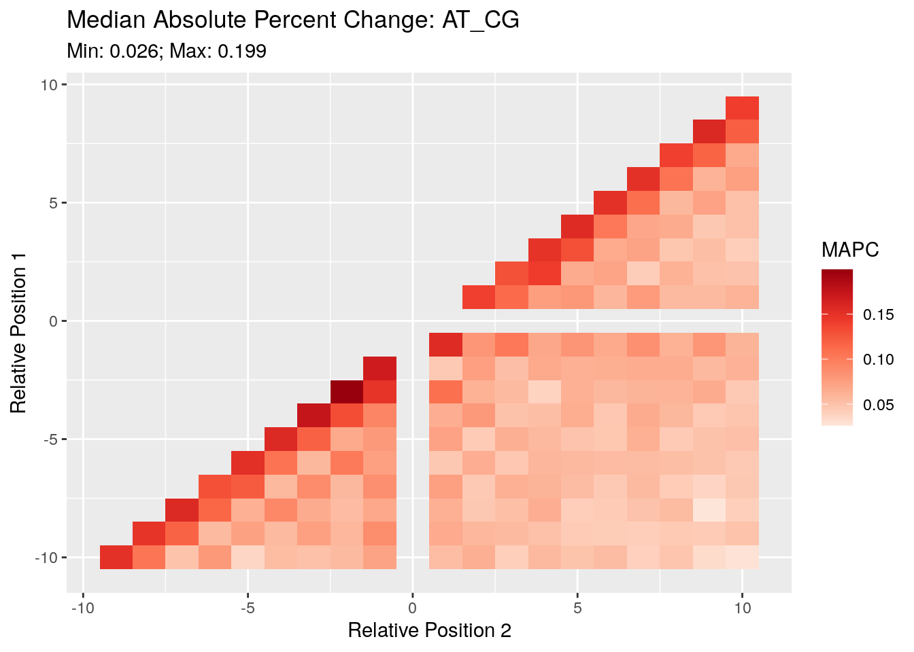
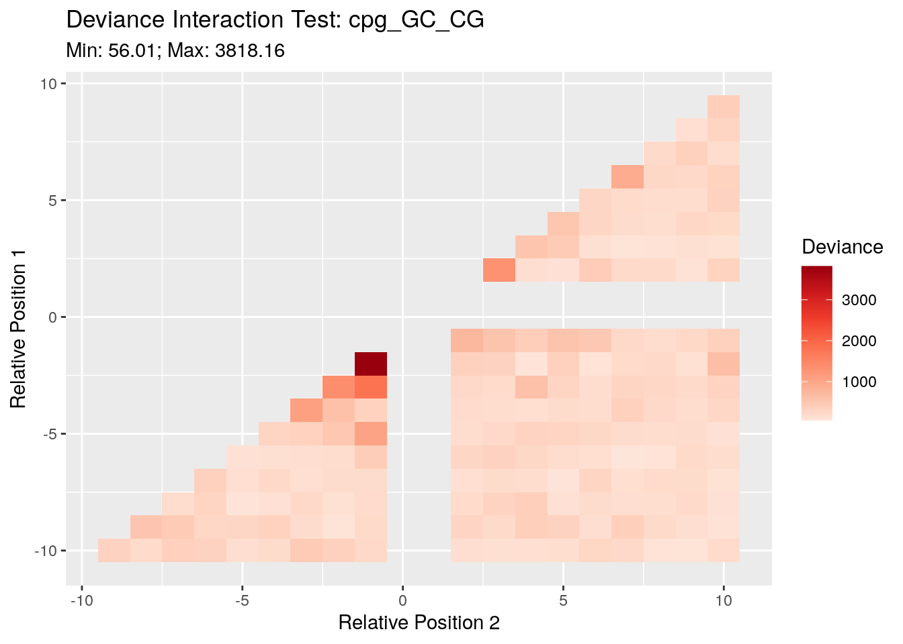

Last updated: 2021-11-09
Checks: 7 0
Knit directory: LSCI/
This reproducible R Markdown analysis was created with workflowr (version 1.6.2). The Checks tab describes the reproducibility checks that were applied when the results were created. The Past versions tab lists the development history.
Great! Since the R Markdown file has been committed to the Git repository, you know the exact version of the code that produced these results.
Great job! The global environment was empty. Objects defined in the global environment can affect the analysis in your R Markdown file in unknown ways. For reproduciblity it’s best to always run the code in an empty environment.
The command set.seed(20211101) was run prior to running the code in the R Markdown file. Setting a seed ensures that any results that rely on randomness, e.g. subsampling or permutations, are reproducible.
Great job! Recording the operating system, R version, and package versions is critical for reproducibility.
Nice! There were no cached chunks for this analysis, so you can be confident that you successfully produced the results during this run.
Great job! Using relative paths to the files within your workflowr project makes it easier to run your code on other machines.
Great! You are using Git for version control. Tracking code development and connecting the code version to the results is critical for reproducibility.
The results in this page were generated with repository version f4374eb. See the Past versions tab to see a history of the changes made to the R Markdown and HTML files.
Note that you need to be careful to ensure that all relevant files for the analysis have been committed to Git prior to generating the results (you can use wflow_publish or wflow_git_commit). workflowr only checks the R Markdown file, but you know if there are other scripts or data files that it depends on. Below is the status of the Git repository when the results were generated:
Ignored files:
Ignored: .Rhistory
Ignored: .Rproj.user/
Note that any generated files, e.g. HTML, png, CSS, etc., are not included in this status report because it is ok for generated content to have uncommitted changes.
These are the previous versions of the repository in which changes were made to the R Markdown (analysis/BRIDGES_two_positions.Rmd) and HTML (docs/BRIDGES_two_positions.html) files. If you’ve configured a remote Git repository (see ?wflow_git_remote), click on the hyperlinks in the table below to view the files as they were in that past version.
| File | Version | Author | Date | Message |
|---|---|---|---|---|
| Rmd | f4374eb | Andy Beck | 2021-11-09 | add formula for MAPC |
| html | ac3b368 | Andy Beck | 2021-11-08 | Build site. |
| Rmd | d08318e | Andy Beck | 2021-11-08 | Add two position model results |
| html | 903ec79 | Andy Beck | 2021-11-02 | Build site. |
| Rmd | 6842cad | Andy Beck | 2021-11-01 | flesh out some pages |
| html | 6842cad | Andy Beck | 2021-11-01 | flesh out some pages |
In a previous document we evaluated the influence of individual positions on the mutation rate as a function of relative position. In this we marginalized over the nucleotides at other positions, ignoring any potential interaction effect. Here in this document we will being to explore the extent to which interactions among flanking positions influence the rate of substitution at a focal site by first focusing on two-way interactions.
For this analysis we’ll be looking at only our singleton counts. For each sub-type at each pair of positions we observe a 4x4 2-way contingency table. Performing a chi square test of independence asks if we have evidence to reject the null hypothesis that the two “variables” (sites) are independent; i.e. the number of times we see AA is the product of the row marginal for A and the column marginal for A, etc.
First let’s write the code to generate the 4x4 contingency table at a single pair of positions for a sub-type:
chi_sq_ind_pair <- function(subtype, p1, p2){
data_dir <- "/net/snowwhite/home/beckandy/research/BRIDGES_redo/output/all_count_2_pos/"
f_name <- paste0(data_dir, subtype, "_p", p1, "_q", p2, ".csv")
df <- read_csv(f_name, col_types = cols()) %>%
filter(singletons > 0)
df_tab <- xtabs(singletons ~ p1 + p2, data = df)
return(df_tab)
}And then we’ll want code to get the statistic at each pair of positions for a subtype:
chi_sq_ind_all <- function(subtype){
final <- data.frame(p1 = numeric(),
p2 = numeric(),
statistic = numeric())
for(i in c(-10:-1,1:9)){
for(j in (i+1):10){
if(j == 0) next
df_tab <- chi_sq_ind_pair(subtype, i, j)
stat_val <- chisq.test(df_tab)$statistic %>% unname()
final <- bind_rows(final, data.frame(p1 = i,
p2 = j,
statistic = stat_val))
}
}
return(final)
}Naturally we’ll want to plot these results to see what patterns we observe across pairs of positions:
chi_sq_ind_plot <- function(subtype){
df <- chi_sq_ind_all(subtype) %>% drop_na()
p <- df %>%
ggplot(aes(x = p2, y = p1, fill = statistic)) +
geom_tile() +
ggtitle(paste0("Chi-Sq Test of Independence: ", subtype),
paste0("Min: ", round(min(df$statistic), 2), "; Max: ", round(max(df$statistic), 2)))+
xlab("Relative Position 2") +
ylab("Relative Position 1") +
labs(fill = "Chi Square Statistic") +
scale_fill_distiller(palette = "Reds", direction = 1)
return(p)
}Due to the number of singletons in our sample, we are very highly powered to detect small deviations from the null model. While within a sub-type values can be compared across pairs of positions to identify pairs where the deviation from independence is stronger, this still does not give a “magnitude” of the change (I’m having brain farts trying to write this sentence). Also due to sample size differences between the sub-types we can’t compare these values across sub-types.
One though I had was to look at the median absolute percent change across the 16 (12) cells; that is, for each cell compute the difference between the observed and expected, divide by the observed to get the percent change relative to the observed, and then get the median absolute value of all of these across all pairs of positions. Let’s see what this looks like, and maybe that will inspire refinement? (the other metric I thought of would be to get the max instead of the median).
\[ \textrm{MAPC} = \textrm{median}(|\frac{O_{ij} - E_{ij}}{O_{ij}} |) \]
chi_sq_med_abs <- function(subtype){
final <- data.frame(p1 = numeric(),
p2 = numeric(),
statistic = numeric())
for(i in c(-10:-1,1:9)){
for(j in (i+1):10){
if(j == 0) next
df_tab <- chi_sq_ind_pair(subtype, i, j)
mod_obj <- chisq.test(df_tab)
stat_val <- abs((mod_obj$observed - mod_obj$expected)/mod_obj$observed) %>% median()
#stat_val <- abs((mod_obj$observed / sum(mod_obj$observed)) - (mod_obj$expected / sum(mod_obj$expected))) %>% max
final <- bind_rows(final, data.frame(p1 = i,
p2 = j,
statistic = stat_val))
}
}
return(final)
}
chi_sq_med_abs_plot <- function(subtype){
df <- chi_sq_med_abs(subtype) %>% drop_na()
p <- df %>%
ggplot(aes(x = p2, y = p1, fill = statistic)) +
geom_tile() +
ggtitle(paste0("Median Absolute Percent Change: ", subtype),
paste0("Min: ", round(min(df$statistic), 3), "; Max: ", round(max(df$statistic), 3)))+
xlab("Relative Position 2") +
ylab("Relative Position 1") +
labs(fill = "MAPC") +
scale_fill_distiller(palette = "Reds", direction = 1)
return(p)
}chi_sq_med_abs_plot("AT_CG")
| Version | Author | Date |
|---|---|---|
| ac3b368 | Andy Beck | 2021-11-08 |
Here in the A(T)>C(G) sub-type we see that for immediately flanking positions the MAPC hovers around 20%, and as we consider positions further from each other the value drops below 10%. It’s not yet clear to me how to tie these into statements regarding importance.
The above analyses told us that, in general, that the joint distribution of the cell counts in the 4x4 contingency table was not the product of the row and column marginals. This is unsurprising since we see this exact same pattern in both the genome-wide counts and the control counts. That is, it is already well-known that genome-wide occurrence of dinucleotides is not predicted by the product of the frequencies of the individual nucleotides, so it’s no surprise we see an interaction in our singletons. But is the interaction we see in the singletons the same that we observe in the controls? That question can be addressed using the log-linear modeling framework employed by Zhu et al (2017). Here, we’ll fit a model of the counts for both the singletons and the controls, allowing for each to have their own marginal distributions at each position, but the interaction between the two positions is shared. We then use the deviance statistic to compare the fit of this model to the fully saturated model which allows for different interaction terms between the singletons and the controls.
deviance_pair <- function(subtype, p1, p2){
data_dir <- "/net/snowwhite/home/beckandy/research/BRIDGES_redo/output/all_count_2_pos/"
f_name <- paste0(data_dir, subtype, "_p", p1, "_q", p2, ".csv")
df <- read_csv(f_name, col_types = cols()) %>%
filter(singletons > 0) %>%
select(p1, p2, singletons, controls) %>%
gather(status, n, singletons:controls)
mod_obj <- glm(n ~ (p1 + p2 + status)^2, data = df, family = poisson())
return(mod_obj %>% deviance)
}
deviance_all <- function(subtype, r_start = 1){
final <- data.frame(p1 = numeric(),
p2 = numeric(),
statistic = numeric())
for(i in c(-10:-1,r_start:9)){
for(j in (i+1):10){
if(j == 0) next
if(j == 1 & r_start > 1) next
stat_val <- deviance_pair(subtype, i, j)
final <- bind_rows(final, data.frame(p1 = i,
p2 = j,
statistic = stat_val))
}
}
return(final)
}
deviance_plot <- function(subtype, r_start = 1){
df <- deviance_all(subtype, r_start) %>% drop_na()
p <- df %>%
ggplot(aes(x = p2, y = p1, fill = statistic)) +
geom_tile() +
ggtitle(paste0("Deviance Interaction Test: ", subtype),
paste0("Min: ", round(min(df$statistic), 2), "; Max: ", round(max(df$statistic), 2)))+
xlab("Relative Position 2") +
ylab("Relative Position 1") +
labs(fill = "Deviance") +
scale_fill_distiller(palette = "Reds", direction = 1)
return(p)
}
| Version | Author | Date |
|---|---|---|
| ac3b368 | Andy Beck | 2021-11-08 |
sessionInfo()R version 4.1.2 (2021-11-01)
Platform: x86_64-pc-linux-gnu (64-bit)
Running under: Ubuntu 18.04.5 LTS
Matrix products: default
BLAS: /usr/lib/x86_64-linux-gnu/openblas/libblas.so.3
LAPACK: /usr/lib/x86_64-linux-gnu/libopenblasp-r0.2.20.so
locale:
[1] LC_CTYPE=en_US.UTF-8 LC_NUMERIC=C
[3] LC_TIME=en_US.UTF-8 LC_COLLATE=en_US.UTF-8
[5] LC_MONETARY=en_US.UTF-8 LC_MESSAGES=en_US.UTF-8
[7] LC_PAPER=en_US.UTF-8 LC_NAME=C
[9] LC_ADDRESS=C LC_TELEPHONE=C
[11] LC_MEASUREMENT=en_US.UTF-8 LC_IDENTIFICATION=C
attached base packages:
[1] stats graphics grDevices utils datasets methods base
other attached packages:
[1] forcats_0.5.1 stringr_1.4.0 dplyr_1.0.7 purrr_0.3.4
[5] readr_2.0.2 tidyr_1.1.4 tibble_3.1.5 ggplot2_3.3.5
[9] tidyverse_1.3.1 workflowr_1.6.2
loaded via a namespace (and not attached):
[1] Rcpp_1.0.7 lubridate_1.8.0 assertthat_0.2.1 rprojroot_2.0.2
[5] digest_0.6.28 utf8_1.2.2 R6_2.5.1 cellranger_1.1.0
[9] backports_1.3.0 reprex_2.0.1 evaluate_0.14 highr_0.9
[13] httr_1.4.2 pillar_1.6.4 rlang_0.4.12 readxl_1.3.1
[17] rstudioapi_0.13 whisker_0.4 jquerylib_0.1.4 rmarkdown_2.11
[21] labeling_0.4.2 bit_4.0.4 munsell_0.5.0 broom_0.7.9
[25] compiler_4.1.2 httpuv_1.6.3 modelr_0.1.8 xfun_0.27
[29] pkgconfig_2.0.3 htmltools_0.5.2 tidyselect_1.1.1 fansi_0.5.0
[33] crayon_1.4.1 tzdb_0.1.2 dbplyr_2.1.1 withr_2.4.2
[37] later_1.3.0 grid_4.1.2 jsonlite_1.7.2 gtable_0.3.0
[41] lifecycle_1.0.1 DBI_1.1.1 git2r_0.28.0 magrittr_2.0.1
[45] scales_1.1.1 vroom_1.5.5 cli_3.0.1 stringi_1.7.5
[49] farver_2.1.0 fs_1.5.0 promises_1.2.0.1 xml2_1.3.2
[53] bslib_0.3.1 ellipsis_0.3.2 generics_0.1.1 vctrs_0.3.8
[57] RColorBrewer_1.1-2 tools_4.1.2 bit64_4.0.5 glue_1.4.2
[61] hms_1.1.1 parallel_4.1.2 fastmap_1.1.0 yaml_2.2.1
[65] colorspace_2.0-2 rvest_1.0.2 knitr_1.36 haven_2.4.3
[69] sass_0.4.0